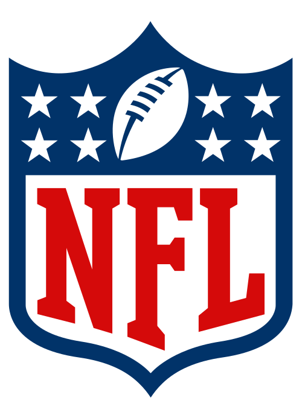

The National Football League (NFL) is a professional American football league in the United States. Composed of 32 teams, it is divided equally between the American Football Conference (AFC) and the National Football Conference (NFC). The NFL is one of the major professional sports leagues in the United States and Canada and is the premier American football league in the world.[5] Each NFL season begins annually with a three-week preseason in August, followed by an 18-week regular season, which runs from early September to early January, with each team playing 17 games and having one bye week. Seven teams from each conference, including the four division winners and three wild card teams, then advance to the playoffs, a single-elimination tournament, which culminates in the Super Bowl, played in early February between the winners of the AFC and NFC championship games. The NFL is headquartered in New York City.[3]
History
On August 20, 1920, a meeting was held by representatives of the Akron Pros, Canton Bulldogs, Cleveland Indians, and Dayton Triangles at the Jordan and Hupmobile auto showroom in Canton, Ohio.[14] This meeting resulted in the formation of the American Professional Football Conference (APFC), a group who, according to the Canton Evening Repository, intended to "raise the standard of professional football in every way possible, to eliminate bidding for players between rival clubs and to secure cooperation in the formation of schedules".[15] A second meeting was held on September 17, 1920, by George Halas, Ralph Hay, Frank Nied, and Carl Storck, with representatives from teams within four states: Akron, Canton, Cleveland, and Dayton from Ohio; the Hammond Pros and Muncie Flyers from Indiana; the Rochester Jeffersons from New York; and the Rock Island Independents, Decatur Staleys, and Racine (Chicago) Cardinals from Illinois.[16][1] The league was renamed to the American Professional Football Association (APFA).[15] The league elected Jim Thorpe as its first president, and consisted of 14 teams (the Buffalo All-Americans, Chicago Tigers, Columbus Panhandles and Detroit Heralds joined the league during the year). The Massillon Tigers from Massillon, Ohio, was also at the September 17 meeting, but did not field a team in 1920. Only two of these teams, the Decatur Staleys (now the Chicago Bears) and the Chicago Cardinals (now the Arizona Cardinals), remain in the NFL.[17]Although the league did not maintain official standings for its 1920 inaugural season and teams played schedules that included non-league opponents, the APFA awarded the Akron Pros the championship by virtue of their 8–0–3 record.[18] The first event occurred on September 26, 1920, when the Rock Island Independents defeated the non-league St. Paul Ideals 48–0 at Douglas Park.[14][19] On October 3, 1920, the first full week of league play occurred.[20][21] The following season resulted in the Chicago Staleys controversially winning the title over the Buffalo All-Americans.[22] On June 24, 1922, the APFA changed its name to the National Football League (NFL).[23][24]
Regular Season
Currently, the 14 opponents each team faces over the 17-game regular season schedule are set using a predetermined formula:[79] The league runs an 18-week, 272-game regular season.[80] Since 2021, the season has begun the week after Labor Day (the first Monday in September) and concluded the week after New Year.[81] The opening game of the season is normally a home game on a Thursday for the league's defending champion.[82] Most NFL games are played on Sundays, with at least one Monday night game and a Thursday night game occurring throughout the season, except for the final weekend.[82] NFL games are not normally played on Fridays or Saturdays until late in the regular season, as federal law prohibits professional football leagues from competing directly with college or high school football. Because high school and college teams typically play games on Friday and Saturday, respectively, the NFL avoided holding games on those days until the Friday before the third Saturday in December. While Saturday games late in the season have been common, the league rarely held Friday games.[83] Beginning in 2023, the NFL has held games on Black Friday, with the games being broadcast on Amazon Prime.[84] NFL games are rarely scheduled for Tuesday or Wednesday, and those days have only been used four times since 1948: in 2010, when a Sunday game was rescheduled to Tuesday due to a blizzard; in 2012, when the Kickoff Game was moved from Thursday to Wednesday to avoid conflict with the Democratic National Convention;[85][86] in 2020, when a game was postponed from Sunday to Tuesday due to players testing positive for COVID-19;[87] and in 2026, when the Kickoff Game was moved from Thursday to Wednesday due to conflicting time-zones with an international game in Melbourne, Australia scheduled on Thursday.
Postseason
After the regular season, the NFL Playoffs, a 14-team single-elimination tournament, is then held. Seven teams qualify from each conference: the winners of each of the four divisions as well as three wild card teams (the three remaining teams with the best overall record, with tiebreakers in the event of two or more teams having the same record). These teams are seeded according to overall record and tiebreakers, with the division champions always ranking higher than the wild card teams.[91] The top team (seeded one) from each conference are awarded a bye week, while the remaining six teams (seeded 2–7) from each conference compete in the first round of the playoffs, the Wild Card round, with the 2-seed competing against the 7-seed, the 3-seed competing against the 6-seed and the 4-seed competing against the 5-seed. The winners of the Wild Card round advance to the Divisional Round, which matches the lower seeded team against the 1-seed and the two remaining teams against each other. The winners of those games then compete in the Conference Championships, with the higher remaining seed hosting the lower remaining seed. The AFC and NFC champions then compete in the Super Bowl to determine the league champion. The only other postseason event hosted by the NFL is the Pro Bowl, the league's all-star game. Since 2009, the Pro Bowl has been held the week before the Super Bowl; in previous years, the game was held the week following the Super Bowl, but in an effort to boost ratings, the game was moved to the week before.[92] Because of this, players from the teams participating in the Super Bowl are exempt from participating in the game. The Pro Bowl is not considered as competitive as a regular-season game because the biggest concern of teams is to avoid injuries to the players.[93]
Team Trophies
The NFL has used three different trophies to honor its champion over its existence. The first trophy, the Brunswick-Balke-Collender Cup, was donated to the NFL (then APFA) in 1920 by the Brunswick-Balke-Collender Corporation. The trophy, the appearance of which is only known by its description as a "silver loving cup", was intended to be a traveling trophy and not to become permanent until a team had won at least three titles. The league awarded it to the Akron Pros, champions of the inaugural 1920 season. The trophy was discontinued and its current whereabouts are unknown.[94] A second trophy, the Ed Thorp Memorial Trophy, was issued by the NFL from 1934 to 1967. The trophy's namesake, Ed Thorp, was a referee in the league and a friend to many early league owners; upon his death in 1934, the league created the trophy to honor him. In addition to the main trophy, which would be in the possession of the current league champion, the league issued a smaller replica trophy to each champion, who would keep it. The current location of the Ed Thorp Memorial Trophy, long thought to be lost,[95] is believed to be possessed by the Green Bay Packers Hall of Fame.[96] The current trophy of the NFL is the Vince Lombardi Trophy. The Super Bowl trophy was officially renamed in 1970 after Vince Lombardi, who as head coach led the Green Bay Packers to victories in the first two Super Bowls.[97] Unlike the previous trophies, a new Vince Lombardi Trophy is given to each year's champion. Lombardi Trophies are made by Tiffany & Co. out of sterling silver.[98] Additionally, players, coaches and personnel of the winning team are awarded Super Bowl rings to commemorate their victory. The winning team chooses the company that makes the rings; each ring design varies, with the NFL mandating certain ring specifications, including requiring the Super Bowl logo be on at least one side of the ring.[99] The losing team are also awarded rings, which must be no more than half as valuable as the winners' rings, but those are almost never worn.[100] The conference champions receive trophies for their achievement. The champions of the NFC receive the George Halas Trophy,[101] named after Chicago Bears founder George Halas, who is also considered one of the co-founders of the NFL. The AFC champions receive the Lamar Hunt Trophy,[102] named after Lamar Hunt, the founder of the Kansas City Chiefs and the principal founder of the American Football League. Players on the winning team also receive a conference championship ring.[103][104]
Player and Coach Awards
The NFL recognizes a number of awards for its players and coaches at its annual NFL Honors presentation. The most prestigious award is the AP Most Valuable Player (MVP) award.[105] Other major awards include the AP Offensive Player of the Year, AP Defensive Player of the Year, AP Comeback Player of the Year, and the AP Offensive and Defensive Rookie of the Year awards.[106] Another prestigious award is the Walter Payton Man of the Year award, which recognizes a player's off-field work in addition to his on-field performance.[107] The NFL Coach of the Year award is the highest coaching award.[108] The NFL also gives out weekly awards such as the FedEx Air & Ground NFL Players of the Week[109] and the Pepsi Zero Sugar. NFL Rookie of the Week awards.[110]